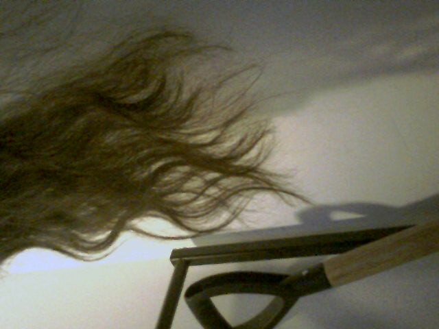

00:54 - Hello, I've had those early 2000s political animations/music videos from jibjab stuck in my head recently.
Anyway, I did a bit of walking what with getting groceries yesterday, like approximately an hour. Then I had dinner and I was kind of slow with this but I forgive myself since I hadn't eaten all day. Also, I got a treat to entice me out of bed like I planned to do yesterday.

I'll just get ready for bed now, hopefully I can be up at a pretty reasonable time, like 10:00 would be fine but usually I don't sleep continuously for that long; when I sleep for more than eight or so hours it's because I stay in bed after waking up initially, or at least that's been the case as of late.
Basic Routine:
- Basic morning and nighttime routine
- Regular sleep schedule
Health and Focus:
- Exercising regularly
- Eating regularly and reasonably healthily
- Reading
- Meditation
Studying:
- Going to the library regularly and frequently
- That's pretty much it :P, the rest is minutia relative to the above
link back to index